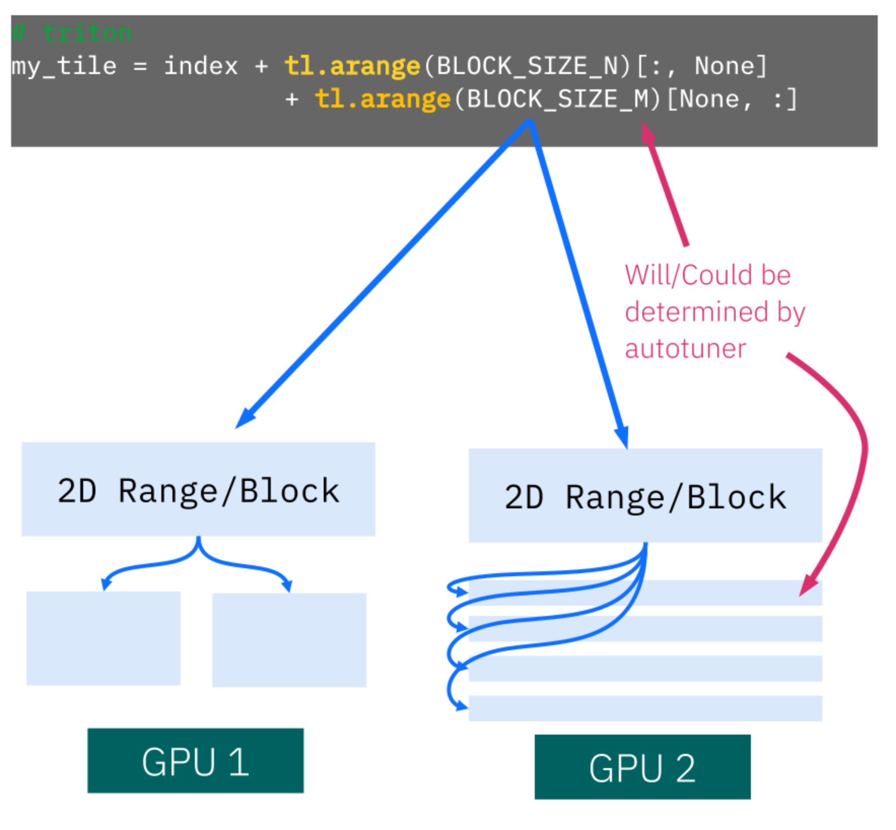
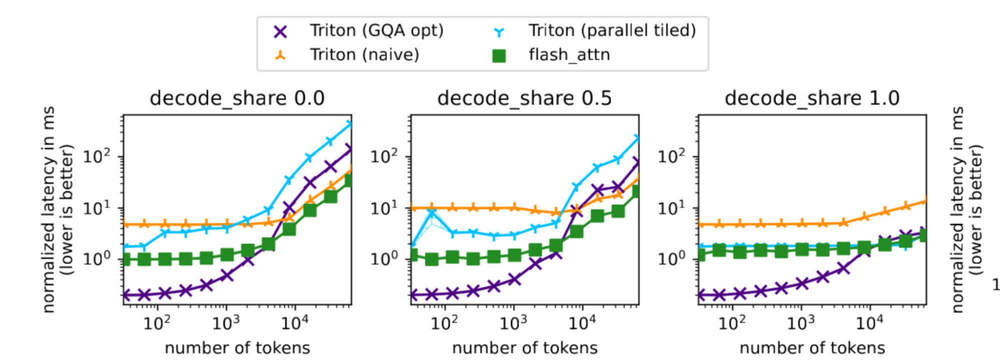
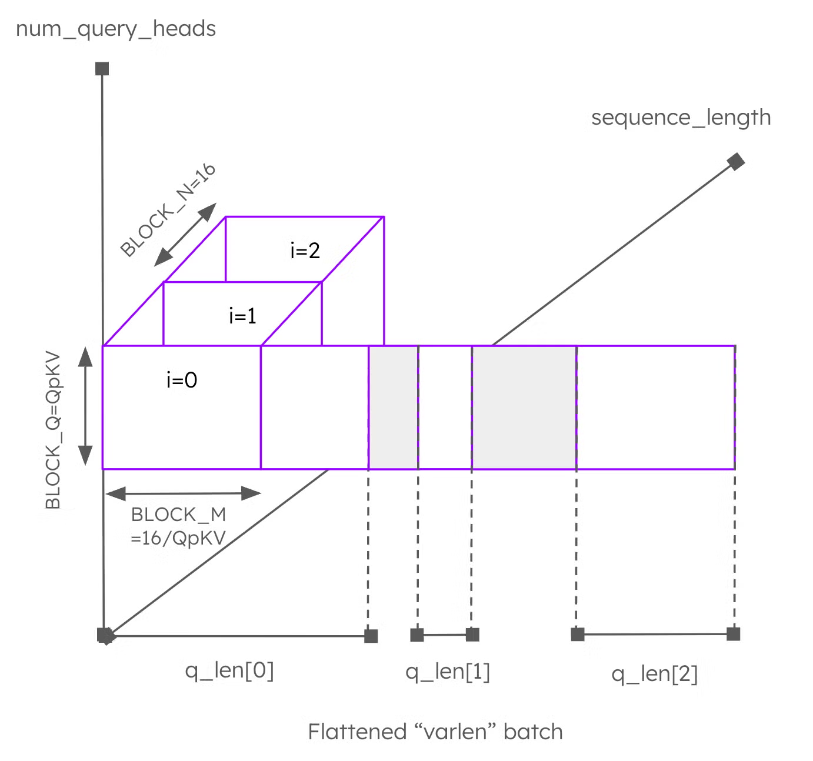
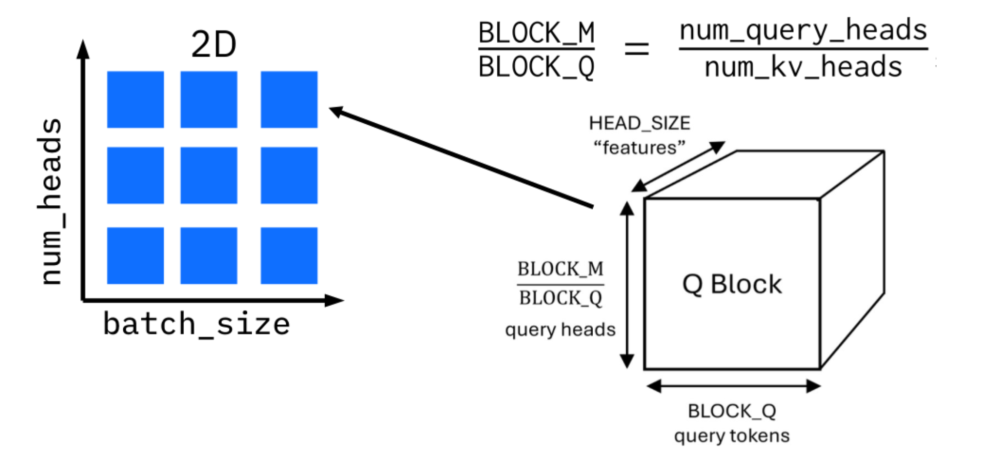
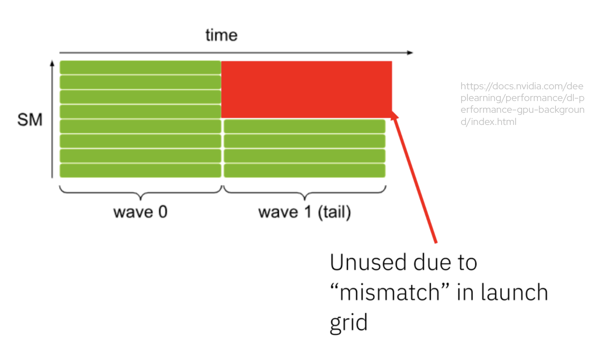
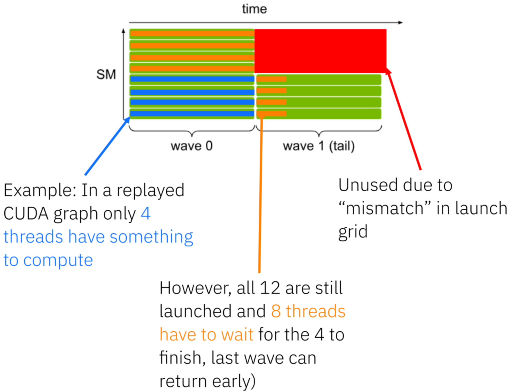
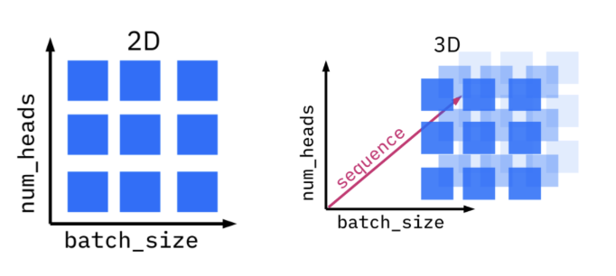
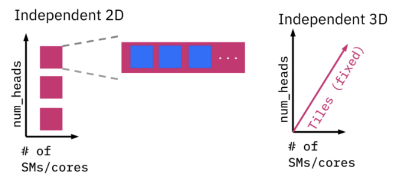
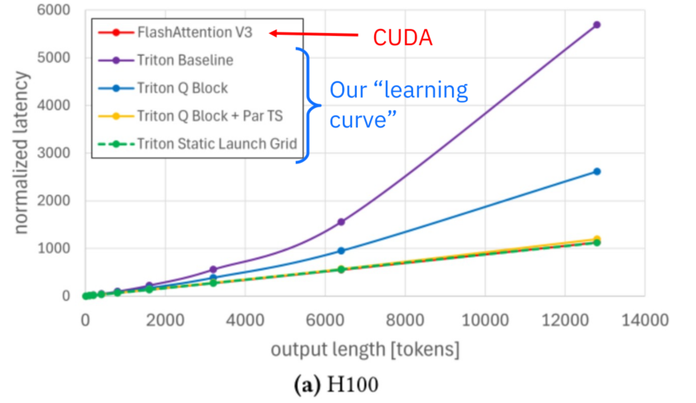
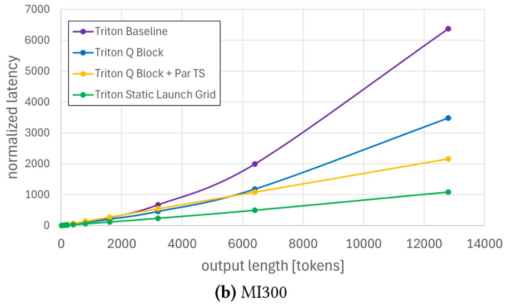

vLLM Triton Attention Backend Deep Dive
This article is adapted from a Red Hat hosted vLLM Office Hours session with Burkhard Ringlein from IBM Research, featuring a deep technical walkthrough of the vLLM Triton attention backend. Explore past topics and join future office hours here.
Over the past year, teams across IBM Research, Red Hat and AMD have developed and upstreamed a Triton-based attention backend for vLLM, aiming for state-of-the-art performance with strong portability across GPU vendors. This work was driven by the growing diversity of accelerator hardware and the rising cost of maintaining large numbers of highly specialized kernels.
This article provides a deep technical walkthrough of that effort. We explain why Triton is a good fit for vLLM, describe the Triton attention backend and when it is used, and then dive into the implementation of a high-performance paged attention kernel. Along the way, we cover kernel-level optimizations, parallelization strategies, CUDA graph interactions, and benchmarking results, before concluding with a brief look at Helion.
Why Triton Helps vLLM
vLLM aims to deliver the best possible inference performance across platforms, models, and execution strategies. In practice, this means supporting multiple accelerators and generations, a wide range of model architectures, and diverse workload characteristics such as varying batch sizes, sequence lengths, and attention patterns.
One approach is to write many highly specialized kernels, each tuned for a specific model and GPU architecture. While effective, this approach does not scale. Maintaining hundreds of kernels across multiple GPU platforms, e.g. NVIDIA Hopper and Blackwell, AMD MI300, Intel, or any future platforms quickly becomes impractical.
Instead, we favor performance-portable kernels that adapt automatically to the hardware they run on. The Triton backend follows this approach.
Triton is a domain-specific language that allows developers to write GPU kernels, such as matrix multiplication or attention, in Python. These kernels are compiled into efficient GPU code for multiple platforms. Triton’s tiled programming model strikes a balance: it is low-level enough to express hardware-relevant optimizations, yet high-level enough to remain largely hardware agnostic.
As shown in Figure 1, developers express computation in terms of logical tiles. The Triton compiler and autotuner determine how these tiles are mapped onto the underlying hardware. Tile shapes and execution layouts can differ significantly across GPUs, but these decisions are made automatically, often guided by autotuning (more details can be found in our paper GPU Performance Portability needs Autotuning (arxiv.org)).

The Triton Attention Backend in vLLM
Attention is typically the most performance-critical operation in large language models. To manage complexity, vLLM introduced an abstraction layer called attention backends, which isolates attention implementations behind a common API and separates them from simpler components such as linear layers or layer normalization.
Within this abstraction, vLLM supports multiple attention backends, including FlashAttention and FlashInfer on CUDA platforms, ROCm-based attention backends, and specialized backends for MLA-style attention (see full list here) . The Triton attention backend is implemented entirely in Triton and is native to vLLM.
This backend was introduced to address performance portability and dependency concerns. It runs the same source code on NVIDIA, AMD, and Intel GPUs, depends only on PyTorch and Triton, and is always available as part of vLLM. Although initially developed by IBM Research and Red Hat AI, it is now maintained and extended by the broader community.
When the Triton Attention Backend Is Used
The Triton attention backend is the default on AMD GPUs running on ROCm and is used on Intel XPU, when running float32, vLLM falls back to Triton Attention because Flash Attention does not support fp32 there. It also supports models requiring specific features, such as ALiBi sqrt used by StepFun audio models, or sink tokens and GPT-OSS behavior, particularly on pre-Hopper NVIDIA GPUs, like A100s.
In addition, it supports models with small head sizes, encoder and decoder attention, and multimodal prefix attention. Since the Triton attention backend is always present, it also serves as a fallback backend, if FlashAttention, FlashInfer, or other dependencies are unavailable or fail to import,. Features such as batch invariance are also supported.
Writing a High-Performance Portable Paged Attention Kernel in Triton
When development of the Triton attention backend began, the kernel was first implemented outside of vLLM and evaluated using extensive microbenchmarks. The kernel API was designed to match vLLM’s requirements, but performance tuning was performed in isolation before end-to-end integration.
Microbenchmarks were essential for understanding performance behavior across prefill-heavy, decode-heavy, and mixed workloads, as well as across different batch sizes and context lengths.
Figure 2 shows representative microbenchmark results. The x-axis represents the total number of tokens, while the y-axis shows latency. Separate subplots distinguish prefill-only, mixed, and decode-only workloads. These results show that different kernel variants excel in different regimes, and that no single configuration dominates across all scenarios.

Microbenchmarks complement end-to-end benchmarks by exposing kernel-level behavior that may otherwise be hidden by system-level effects.
Reminder: What the Paged Attention Kernel Does
Paged attention implements attention in a memory-efficient way by paging the KV cache. For each query in a batch, the kernel processes each query token. For each token, it iterates over query heads and corresponding KV heads, and then traverses the paged KV cache to compute attention scores and apply value vectors.
This structure is illustrated in Figure 3. Query tokens are laid out along the x-axis, query heads along the y-axis, and the paged KV cache traversal forms the innermost loop. Details such as causal masking and sliding windows are omitted for clarity.

For a detailed explanation of the low-level optimizations of the kernel, we recommend the corresponding pytorch blog by the kernel authors: https://pytorch.org/blog/enabling-vllm-v1-on-amd-gpus-with-triton/
The code can be found here: https://github.com/vllm-project/vllm/blob/main/vllm/v1/attention/ops/triton\_unified\_attention.py
Optimizing Tile Sizes for tl.dot Using Q Blocks
The core computation in attention is matrix multiplication, implemented in Triton using tl.dot. However, high performance requires sufficiently large tiles to fully utilize the hardware and simply loading the paged KV cache did not lead to good results.
Tile sizes on the KV side are constrained by the page size of the KV cache, so optimization focuses on the query side. For group query attention, cache reuse can be increased by processing all query heads associated with a single KV head together. To further increase parallelism, multiple query tokens are grouped into a single work item, referred to as a Q block.
Figure 4 illustrates this approach. The launch grid spans batch size and KV heads, while Q blocks determine how many query tokens and heads are processed per kernel instance. Autotuning selects appropriate block sizes for each platform.

Adding Parallelization With Parallel Tiled Softmax
Processing multiple query tokens at once works well for prefill workloads but provides no benefit for decode workloads, where only a single query token is processed. To address this, additional parallelization is introduced through parallel tiled softmax, the so-called “3D kernel”.
This approach splits the traversal of the KV cache across multiple kernel instances. Each instance computes partial results, which are later reduced to produce the final output. Because Triton does not provide a global barrier, this reduction requires launching a second kernel, introducing a trade-off between additional parallelism and launch overhead. Heuristics are used to determine when this approach is beneficial.
CUDA Graphs, Launch Grids, and GPU Execution Waves
CUDA graphs reduce kernel launch overhead by recording and replaying fixed execution graphs. However, attention kernels present challenges because their launch grids often depend on batch size and sequence length.
GPUs execute kernels using a fixed number of streaming multiprocessors (SMs). When more threads are launched than there are SMs, execution proceeds in waves. Figure 5 illustrates this behavior, where a second wave leads to underutilization.

When captured in a CUDA graph, this inefficiency is replayed even if the effective workload size decreases. Figure 6 shows how fixed launch grids can lead to additional wasted work and increased latency.

From Variable Launch Grids to Persistent Kernels
Early versions of the paged attention kernel used variable launch grids that scaled with workload size, as shown in Figure 7. While flexible, this approach interacts poorly with CUDA graphs.

To address this, we designed persistent kernels (PRs to vLLM pending). A fixed number of kernel instances is launched, equal to the available compute resources. Each instance dynamically determines how much work to process by reading metadata from GPU memory. This keeps launch grids constant and allows CUDA graphs to be reused efficiently.

Benchmarking Results
Benchmarking results from late 2025 demonstrate the effectiveness of this approach. Figure 9 shows end-to-end latency results for Llama 3.1 8B with batch size one and an input length of 500 tokens on NVIDIA H100 and AMD MI300, the output length is denoted at the x-axis.
On H100, the Triton attention backend achieved 100.7% of the performance of FlashAttention 3 for long decode requests. On MI300, it achieved a speedup of approximately 5.8× over earlier implementations. Importantly, the same Triton kernel source code was used on both platforms. Please note, the paged attention implementation in Triton has roughly 800 lines of code, while FlashAttention3 has around 70 '000 lines of code.


Preview: Paged Attention in Helion
Helion is a new domain-specific language from the PyTorch team that can be viewed as a higher-level Triton or tiled PyTorch. A simplified paged attention kernel was implemented in Helion as an experiment, with promising early results. The work was published on the PyTorch blog, and the code is available as a draft pull request in the vLLM repository.
Conclusion
As models, inference optimizations, and hardware platforms continue to progress, performance portability has become increasingly important. The Triton attention backend in vLLM demonstrates that it is possible to achieve state-of-the-art attention performance using a single, portable kernel implementation.
Through careful kernel design, extensive microbenchmarking, and system-level optimizations such as persistent kernels and CUDA graphs, the Triton backend matches or exceeds highly specialized implementations while remaining portable across GPU vendors. Today, it is the default attention backend on AMD and runs efficiently on NVIDIA and Intel platforms using the same source code.
While this blog post gave an overview of the most important optimizations in the Triton Attention backend, you could find all details and more benchmark results in our related paper The Anatomy of a Triton Attention Kernel (arxiv.org).
Acknowledgments
This work was carried out by the AI platform team at IBM Research – thank you to everyone involved: Burkhard Ringlein, Jan van Lunteren, Chih-Chieh Yang, Sara Kokkila Schumacher, Thomas Parnell, Mudhakar Srivatsa, Raghu Ganti.